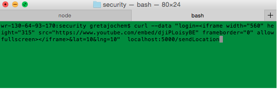
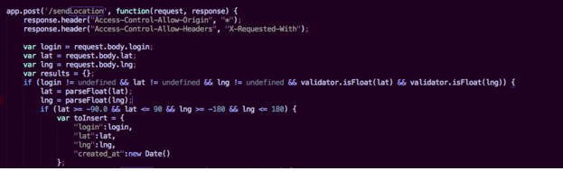
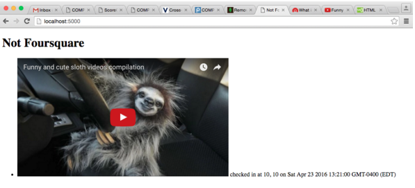
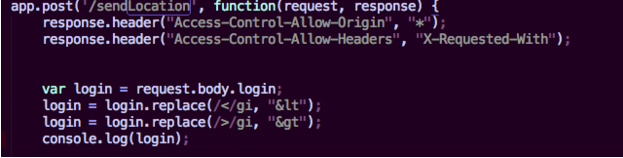
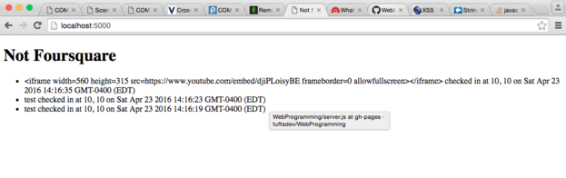
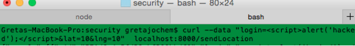
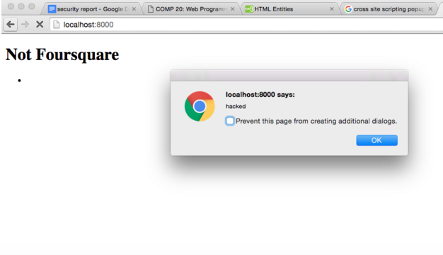
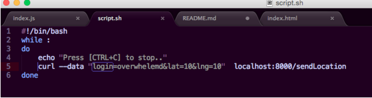

First, I "black box" tested the site, and I found that it is vulnerable to injection and cross site scripting. Then, I did a manual code review and thought that the code might also vulnerable to a database overload. I then did a white box test and found that this was true. I did not use any other tools specifically besides terminal and writing a bash script to overload the database, which is explained below.
Location found: This issue was found on the main page, http://localhost:5000/ (I ran this code locally because Ming shut off his heroku server) when a GET request is made (someone navigates to that page).
Severity: This is a high risk issue. A hacker could go into the site and make it look like whatever they want or make it totally different that its original purpose.
Description and Proof: When the project is being served locally, one can make post requests giving their username, lat, and lng. These are stored in the mongo database.
You can make a post request to the page and instead of entering in a username, you can enter in code.

Because the app.post section in index.js, the code that is managing the post and get requests, doesn't check the login field to ensure that it is not code.

Whatever is entered into the login field in the POST request is then put in the database. When a GET request is made, the information, including username, of the entries is dynamically put on the web page. Because the POST request I made above in terminal was acually code, login=<iframe width="560" height="315" src="https://www.youtube.com/embed/djiPLoisyBE" frameborder="0" allowfullscreen></iframe> then the web browser reads this as HTML code, and a video loads on the page.

This is an example of injection. My example, of injecting a video of sloths, is not all that malicious. But it demonstrates this code is not robust against injection attacks, which can be much more serious. The hacker could put whatever they wanted on the website. For example, they could make it look like a totally different website like your bank and have you enter in your username and password. They could also totally change what the website looks like and make it something totally different that its original purpose-- definitely not secure!
Fortunately, there is a way to fix this issue. If the user's input from the POST request is checked before it is entered into the database, then we can check from cross site scripting and avoid this issue. For example, we could use the .replace method in javascript to replace characters in the user's string that are associated with XSS, like angle brackets, < or >, which are used in tags.
For example, I checked the user's input for < and > as shown below:

With this, then when I made the same request as above, making the login field in the POST request, login= login=<iframe width="560" height="315" src="https://www.youtube.com/embed/djiPLoisyBE" frameborder="0" allowfullscreen></iframe> the result is shown in the GET request below:

So, the .replace function worked to remove the angle brackets and replace them with the HTML character entity (like a code for the < symbol that is just a normal character not part of a tag) and when the same request is made, the page is no longer hacked, as shown in the photo above. It is worth noting that this exact same issue could occur on /checkins.json if injection is submitted through the post request, but checking the user's input in the app.post will solve this issue.
Location: This was found on the main page of the web application, based in the index.js code that handls the GET and POST request.
Severity: This issue is high severity. If javascript code can be injected into the page, then hackers could do just about anything you can do with javascript, like stealing information or cookies, or rewriting the entire page. This is a huge security risk.
Description and Proof: When a curl request is made to the /sendLocation like below:

Then, the login information for the person gets stores at <script>alert('hacked');</script>. This is javascript code for a pop up box to come on screen. Then, because the login field from the post request does not check the user's input (I showed this in detail in Issue I). The username is stored in the mongo database, and so when the GET request is made when http://localhost:8000/ is loaded, an alert box appears on screen:

This can be very dangerous. While I just scripted an alert box, hackers can do much worse things like steal information, steal cookies, or other potentially more malicious things.
To fix, this, we can do the same thing we did in issue I, and check the user's input. If we insert code that changes any < or > to their HTML character entity, then we can avoid this issue. The exact code for doing this is shown in section I above. Additionally, while I showed this XSS hacking the main page, if a script is inserted for a login into the database, then This works for both issues.
Location: This issue was found in the mongo database that stores the user's information.
Severity: This issue is moderate severity. It is possible to fill the database and make it unable to take in any new information, but it is potentially less malicious than cross site scripting. It can make the application unuseable, but is not likely to result in things like information stealing.
Description and proof: I wrote a bash script that sends curl requests to the server

Unless I press control c and stop the script, it is an infinite loop and sends POST requests to the server. Our mongodb database hosted on heroku can hold 496MB of data. It has a limit because we have a free account with limited storage space. Thus with this script, eventually the database will fill up and we will not be able to add anything more to it.
Resoulution: This issue is harder to solve. I would recommend looking into rate limiting, as that falls outside the scope of the course but could fix the issue.
There are several glaring issues with this web application. Mostly, they are from trusting the user's input-- a huge problem. The injection and cross site scripting in particular could result in malicious attacks and even stealing user's information. These two issues demonstrate an important concept-- never trust user input-- that should be applied in all future web applications and really any coding projects. Fixing injection and cross site scripting isn't too difficult if you check the users's input. But, to fix the third issue, overloading the database, is harder. I recommend that you look into rate limiting, but it falls outside my expertise and may be expensive.